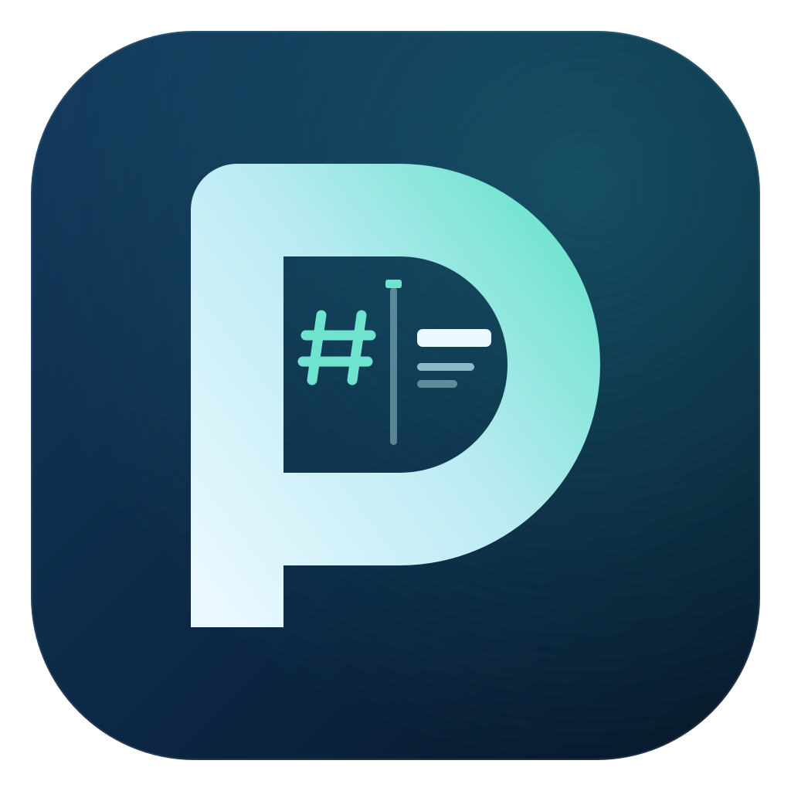
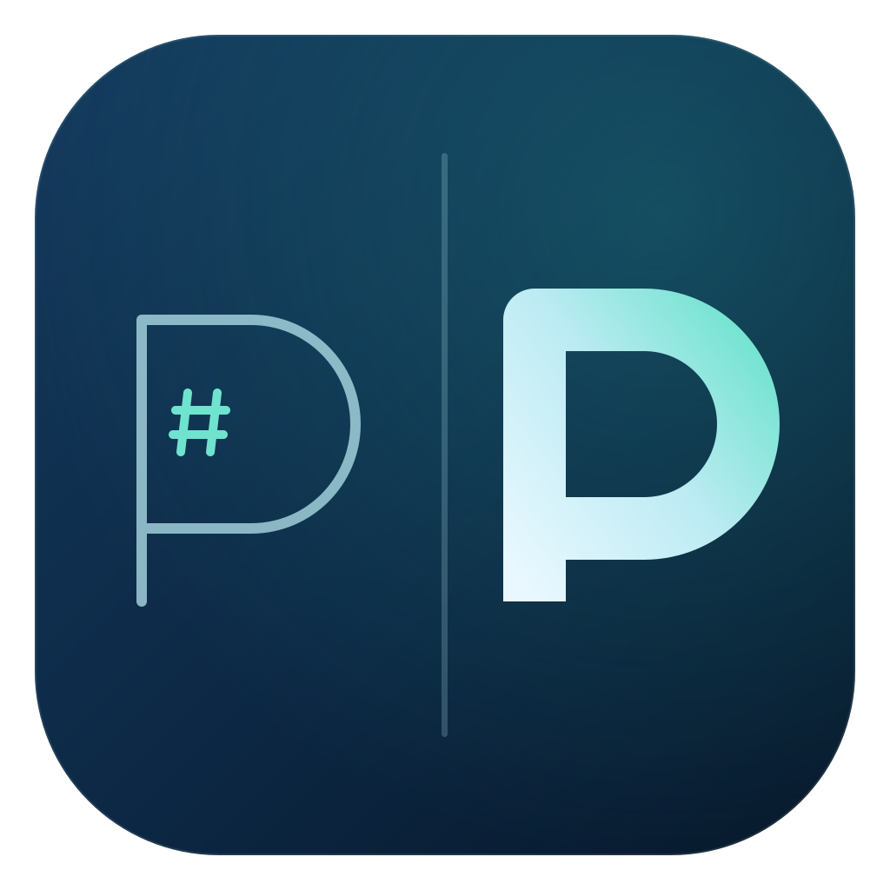
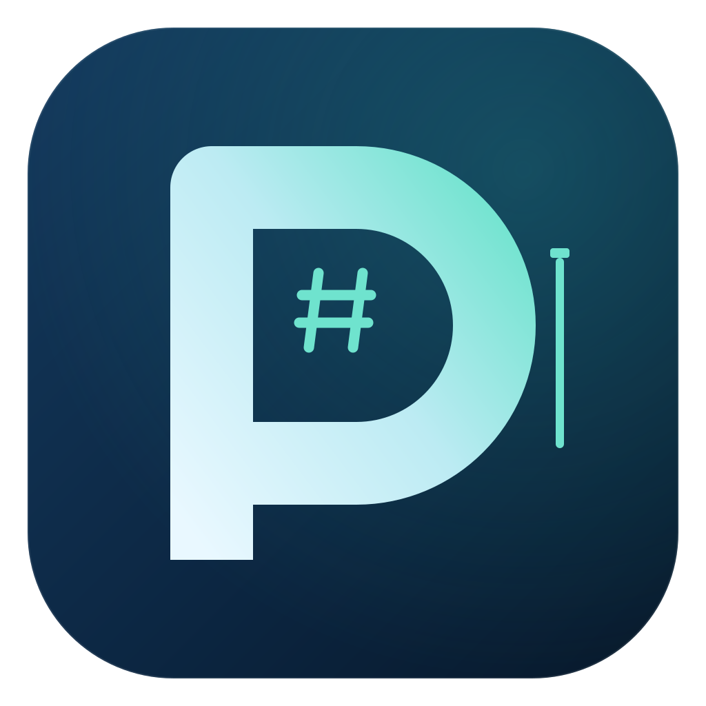
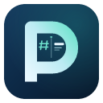
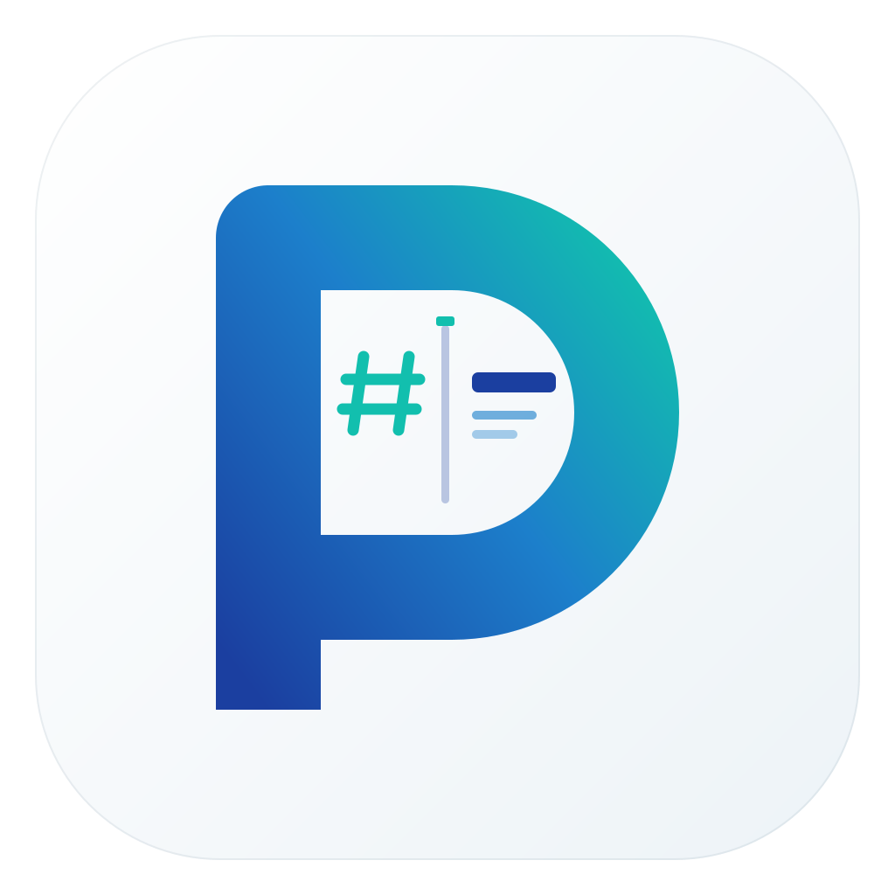

Plume / Brand Refresh · Letter Edition
字母版 Logo 提案
放弃具象羽毛，改用几何字母 P 作为骨架。核心巧思是：P 的内孔（负空间）本身就是一扇实时预览窗——
左边是尚未渲染的 Markdown 源码 #，中间一根编辑光标，右边是已经渲染好的标题行。
一个字母同时讲清「Plume」「Markdown」「所见即所得」三件事。
笔画为 120 单位等宽几何构造（非字体），四边留白严格对称，品牌色沿用深蓝 → 青绿。
三个方向 concepts



方案 A · 构造拆解 how it reads
- 字母 PPlume 首字母。一根 120 宽的连续笔画绕出碗部，转角圆、端头方，几何而非字体；四边留白各 207 单位，完全对称。
- 内孔 / 左青绿色 # —— Markdown 最标志性的标题标记，代表尚未渲染的源码。
- 内孔 / 中一根半透明编辑光标，顶端带 I-beam 横块，把窗口分成源码区与结果区。
- 内孔 / 右一条加粗标题行加两行递减正文 —— 源码落地后的所见即所得结果。
- 配色深墨方章 + 浅蓝→青绿笔画；# 用高饱和青绿单独提亮，视线自然落在「转换发生的位置」。
小尺寸辨识度 legibility

128 px64 px
32 px
16 px
配色变体 variants

字标组合 lockup
Plume
WYSIWYG MARKDOWN EDITOR
已落地：方案 A 已生成全套应用图标（
未改动：
src-tauri/icons/*，含 ico / icns / 各尺寸 PNG），
并同步更新网页 favicon（public/plume-icon.png 与 dist/plume-icon.png）。
源文件在本目录，换用 B / C 或净纸版只需改一行渲染目标再跑一次 npx tauri icon。未改动：
md.ico / md-icon-preview.png 是 .md 文件关联用的文档图标，用途不同，保持原样。